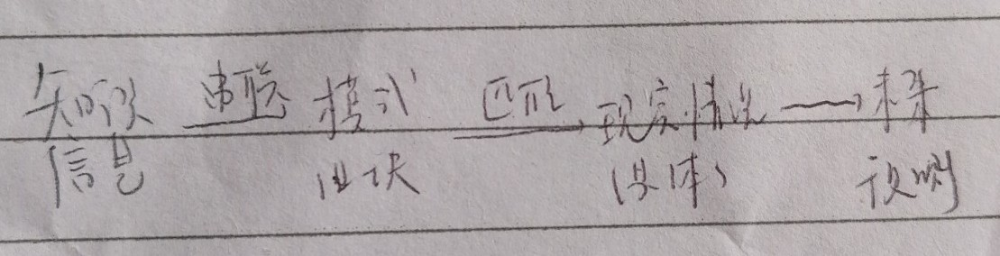

Tags: 导入Edge::3-21
秋山耀平的学习外语的流程。【从哪里挑选出什么样的单词，然后再应用到哪里？】
狗刨式单词-----> 与人对话-----> 追加单词
(Anki) (italki录音 <----- （Anki）
于真实的语言环境中甄选对自身有用的单词，并将其灵活运用于实际对话之中。
Tags: 导入Edge::3-21
提高生产力【最终产出量】的关键是什么（两个力，分别是什么？）
精力和注意力。
Tags: 导入Edge::3-21
在所有习惯里，堪称最佳的习惯有哪些呢？（共计4个，按从宏观到具体的顺序排列）
制定每周和每日工作清单、
运用番茄工作法、
每日早上7点起床
以及借助Anki软件进行复习。
Tags: 导入Edge::3-21
每周每日工作法何时能彰显显著成效，何时又会效果平平呢？
若任务清单涵盖5至10个项目，此时需对其展开合理规划，精准调配精力与时间，每周每日工作法往往能发挥极佳效果。
反之，当仅有一两件需全力以赴的事务，如为备考而忙碌整日，该工作法的效果或许就不那么显著了。
Tags: 导入Edge::3-21
每周及每日工作清单，这个体系包含三条规则。
每周末制定下一周的计划，每晚制定第二天的计划，当天的计划一旦完成就立马停止工作，不再新加内容。
1 每周末制定一份涵盖本周所有待办事项的清单，这些事项源于个人项目。
2 每晚依据周清单制定一份日待办清单。
3 每天专注于当日工作，完成既定目标后不再新增任务。一旦达到预设的工作结束时间，或者完成清单上的全部事项，应立即停止工作。
Tags: 导入Edge::3-21
Anki的优点是什么？【自动管理什么？内置什么算法？为每个卡片提供什么？】
自动管理所有的卡片。内置间隔重复的算法并为每个卡片提供复习计划。
Tags: 导入Edge::3-21
克服拖延应具备怎样的心理状态，又可运用哪些技巧呢？
可采用短跑心态，运用拆分任务的技巧，也就是借助番茄工作法提升效率。
Tags: 导入Edge::3-21
为何间隔重复系统可作为一种知识管理系统呢？
可以为每个知识点都提供复习计划。
原因在于，你能够将所有期望掌握的知识纳入其中，系统会为这些知识制定复习计划，自动进行管理，并适时提醒你开展复习。
Tags: 导入Edge::3-21
什么是模式识别理论？【大脑里面存储的什么被串联成什么？与什么进行匹配？以后来对未来怎么样？】
- 大脑中储存大量的知识，经验
- 被串联成不同的模式或者信息组块
- 进而与实际情况进行匹配，对未来进行预测。

Tags: 导入Edge::3-21
使用番茄工作法，要用的哪四个清单？
活动清单，待办清单，时间日志，中断事项
Tags: 导入Edge::3-21
为何持续追求快乐会使人陷入恶性循环？ 【当什么被满足的时候，人体会分泌什么？身体的什么机制会引发什么？使人陷入什么之中？】
当需求被满足时，人体会分泌多巴胺，与此同时，身体的平衡机制会引发相应的痛感，使人陷入无聊、空虚、焦虑与恐慌之中。
为了弥补这种负面情绪，人们会去追寻更多的快乐，而这又会滋生更多的焦虑，形成一个难以挣脱的恶性循环，宛如无底深渊。最终，人们会发现自己难以去尝试有难度的事情。
Tags: 导入Edge::3-21
由痛感产生的多巴胺，它的两个作用是什么？
缓解焦虑和让人保持专注。
其一，它不仅不会诱发焦虑，反而能够有效缓解焦虑情绪。
其二，它有助于使人精神更为集中，进而提升做事效率，让人保持专注状态。
Tags: 导入Edge::3-21
什么是动觉【不依赖什么就知道什么的状态。】
运动的感觉，不用视觉就知道自己的姿势和动作的状态
Tags: 导入Edge::3-21 自我成长::Anki
安排自己的任务时，第一个任务应该是最难，最不想干的事情，但是这样的话会导致自己的拖延，如何解决拖延的问题呢，对应的方法是什么？【一个核心方法和一个辅助方法。】
让自己发呆，直到感到无比的无聊。
利用番茄工作法给这个任务先分配10分钟的工作时间。
首先，核心方法是专注于发呆，心无旁骛地沉浸其中。直至感到无比无聊，此时，即便去做原本最抵触的事情，也会促使多巴胺分泌。
其次，辅助方法是借助番茄工作法，仅为重要任务分配10分钟的工作时间，从而助力自己迅速投入工作。
Tags: 导入Edge::3-21
在知识的范畴内，一阶、二阶、三阶知识分别指的是什么呢？
书本上的原始内容，属于一阶知识。
个人的思考成果与笔记，则构成二阶知识。
将个人思考提炼浓缩为关键词，便形成了三阶知识。
Tags: 导入Edge::3-21
Anki的反馈机制（Feedback Loop）是什么？
【通过自我评估来自动调节卡片的什么？】
通过自我评估来自动的调节卡片的间隔时间。
每次你完成一张闪卡后，你都会对自己的表现进行自我评估（如“容易”、“困难”或“忘记了”），这形成了一个即时的反馈机制。 根据你的学习进度和表现自动调整卡片的展示顺序和时间。这使得学习过程更加个性化，符合每个用户的记忆曲线
Tags: 导入Edge::3-21
通过频繁的主动回忆练习，我们提高了信息在大脑中的“可提取性”，可提取性是什么意思？【从哪里提取什么的什么程度？】
再次从记忆中提取信息的难易程度。
即在需要时更容易从记忆中提取出信息。
Tags: 导入Edge::3-21
“要事为先”强调在一天的学习计划中，将什么任务安排在认知资源怎么样的时段，通常是早晨。
最重要和最具挑战性的任务，最为充沛的时段。
Tags: 导入Edge::3-21
每天早晨起床后，首先进行最重要的学习任务，这些重要的学习任务包括哪三种类型？
对旧知识的复习，新知识的学习、复杂问题的解决。
Tags: 导入Edge::3-21
认知峰值理论：研究表明，人的认知性能在一天中的什么时候达到峰值？
早上。
Tags: 导入Edge::3-21
“分散学习”指的是将什么分散到什么进行，而不是什么？
学习任务，多个时间段，一次性集中学习。
Tags: 导入Edge::3-21
在学习过程中，遇到不理解或难以掌握的部分怎么办？【利用分层学习的思想，分为三个步骤】
首先，对尚未掌握的难点部分进行标记。接着，回顾已熟练掌握的内容。完成复习后，再集中精力攻克标记的难点。
Tags: 导入Edge::3-21
多轮学习：每次学习时，先怎么样，再怎么样？
先复习前一轮的内容，再学习新的部分，逐步深化理解。
Tags: 导入Edge::3-21
及时复习能够在记忆尚未怎样时进行巩固，增强记忆痕迹。
尚未完全消退时。
Tags: 导入Edge::3-21
根据遗忘曲线理论，信息在学习后的多久内遗忘速度最快。
最初几天。
Tags: 导入Edge::3-21
精细复述 ，这种方法有助于减少信息的什么，压缩和整理信息，促进什么样的理解和记忆。
混乱，深层次。
Tags: 导入Edge::3-21
每次学习结束后，应立即采用哪两种学习策略来巩固记忆、深化理解呢？【使用 Anki 时需动用哪两种感官】
及时复习和精细复述。【眼睛和嘴巴】
Tags: 导入Edge::3-21
如何理解“要事为先”这一学习策略呢？【清晨时候人的什么资源充沛，外界的什么比较少？这个时候应该优先投入到什么？】
清晨时分，人的认知资源充沛，外界干扰较少，身体也尚未感到疲劳，此时应优先投入学习。
Tags: 导入Edge::3-21
分层学习 这个学习策略，如何理解？
先聚焦于能够掌握的知识内容，对其进行反复复习巩固。待进入下一轮学习时，再融入尚未掌握的部分。
Tags: 导入Edge::3-21
学习过程中，遇到难点学不动的时候，怎么办？策略是什么？【策略名称和策略内容】
分层学习的策略，最小学习循环为单元，每一轮是 学习-笔记-复习 的三个阶段的循环。
- 在每一轮学习循环中，应先专注于已掌握的内容，将其整理成系统的学习笔记，并通过复习来巩固知识。
- 对于暂时难以理解的知识点，可以先做标记，留待下一轮学习循环时再重点攻克。
Tags: 导入Edge::3-21
分层学习的核心理念在于什么？
清晰辨别已知与未知内容，合理划分基础部分与难点部分。
Tags: 导入Edge::3-21
固定的复习时间，一天至少几次?以及分别是什么时候？
一天至少三次，分别是早起上厕所时候，吃完午饭之后午休之前，以及晚上睡前。
- 清晨：利用早晨起床后【在上厕所的时候】的时间，大脑较为清醒，适合进行第一次复习
- 午间：在午餐后、午休前的空档，是进行知识巩固的理想时机
- 晚上：睡前进行最后一次复习，有助于记忆的长期保持
Tags: 导入Edge::3-21
有效的复习过程可以分为三个递进阶段，从知识输入到最终输出形成完整的学习闭环，分别是利用了什么工具？
- Anki闪卡系统，
- Edge浏览器，豆包电脑版
- 纸和笔来绘制思维导图。
Tags: 导入Edge::3-21
有效的复习过程可以分为三个递进阶段，从知识输入到最终输出形成完整的学习闭环，第二阶段：听觉强化，使用了哪两个工具以及这个策略的核心理念是什么？
Edge浏览器的朗读功能，豆包 生成双人对话播客。
在听取过程中训练预测能力，积极思考下一句内容。
Tags: 导入Edge::3-21
有效的复习过程可以分为三个递进阶段，从知识输入到最终输出形成完整的学习闭环，第三阶段：知识输出，使用了什么工具以及这个策略的核心理念是什么？
纸和笔，
在不依赖任何参考资料的情况下，将脑中所学知识通过思维导图的形式可视化
Tags: 导入Edge::3-21
每天早晨上厕所时，进行什么样的复习活动？
要么通过看来复习，要么通过听来复习。
迅速浏览由 Anki 卡片生成的网页。
或者是
借助 Edge 浏览器或豆包生成的播客聆听朗读内容。
Tags: 导入Edge::3-21
每天早晨上完厕所后，进行什么样的复习活动？
不参考资料的情况下，进行思维导图的绘制。
Tags: 导入Edge::3-21
每天晚上睡前，进行什么样的复习活动？
晚上睡前听朗读来入睡。
利用Edge浏览器的朗读功能，或者是豆包的双人对话音频播客。将已复习过的笔记转化为音频。
在听的过程中，积极思考下一句内容。
Tags: 导入Edge::3-21
每天午休前，进行什么样的复习活动？
跟睡前的复习活动一样，听相关知识点的朗读。利用edge浏览器或者是豆包生成的播客。
利用Edge浏览器的朗读功能，将已复习过的笔记转化为音频。
在听的过程中，积极思考下一句内容。
Tags: 导入Edge::3-21
在当日的工作与学习中，何时结束可依据两个条件，满足其一即可。
一是当天工作清单上的待办事项全部完成，二是时间到达晚上9点。
Tags: 导入Edge::3-21
斯科特在超级学习者这本书里面提到的
后设学习、专心致志、直截了当地学习、反复操练、提取记忆、反馈意见、保留记忆、培养直觉和勇于试验，这九条学习原则对应的方法分别是什么？
- 后设学习，制定学习地图和规划，明确学习资源、练习方法、目标以及学习周期。
- 专心致志，采用番茄工作法，优先在清晨处理最重要的事务。
- 直截了当学习，结合实际应用场景开展练习。
- 反复操练，将学习中的难点单独提炼出来，进行反复练习。
- 提取记忆，不借助资料，仅凭记忆在白纸上进行内容梳理，绘制思维导图。
- 反馈意见，依据反馈信息对学习过程加以改进。
- 保留记忆，运用间隔重复系统 Anki 辅助学习。
- 培养直觉，以简洁的语言，用自己的话语进行表达。
- 用于实验，尝试全新的学习方法。
Tags: 导入Edge::3-21
斯科特在超级学习者这本书里面提到的
后设学习，这个学习原则对应的方法分别是什么？
后设学习，制定学习地图和规划，明确学习资源、练习方法、目标以及学习周期。
Tags: 导入Edge::3-21
斯科特在超级学习者这本书里面提到的
专心致志学习原则的对应方法是什么？
专心致志，采用番茄工作法，优先在清晨处理最重要的事务。
Tags: 导入Edge::3-21
斯科特在超级学习者这本书里面提到的
直截了当学习，这条学习原则的对应方法是什么？
直截了当学习，结合实际应用场景开展练习。
Tags: 导入Edge::3-21
斯科特在超级学习者这本书里面提到的
反复操练，这条学习原则的对应方法是什么？
反复操练，将学习中的难点单独提炼出来，进行反复练习。
Tags: 导入Edge::3-21
斯科特在超级学习者这本书里面提到的
提取记忆，这条学习原则的对应方法是什么？
提取记忆，不借助资料，仅凭记忆在白纸上进行内容梳理，绘制思维导图。
Tags: 导入Edge::3-21
斯科特在超级学习者这本书里面提到的
反馈意见，这条学习原则的对应方法是什么？
反馈意见，依据反馈信息对学习过程加以改进。
Tags: 导入Edge::3-21
斯科特在超级学习者这本书里面提到的
保留记忆，这条学习原则的对应方法是什么？
保留记忆，运用间隔重复系统 Anki 辅助学习。
Tags: 导入Edge::3-21
斯科特在超级学习者这本书里面提到的
培养直觉，这条学习原则的对应方法是什么？
培养直觉，以简洁的语言，用自己的话语进行表达。
Tags: 导入Edge::3-21
斯科特在超级学习者这本书里面提到的
永于实验，这条学习原则的对应方法是什么？
永于实验，尝试全新的学习方法。